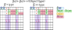
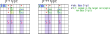

JE2+,JE2++ タイプ
(1) JE2+,JE2++ の定義
JE2+,JE2++ は、Target と Companion を区別せず、合わせて Object とするタイプです。
JE2の Target の一方が Object のタイプ（JE2+）と、両方の Target が Object のタイプ（JE2++）があります。

Bird 文書では、Object に "ロックされた 非Base数字 がある" ことを条件としていますが、この条件は緩めることができます。
緩めた条件のもとで適用できる除外ルールがあります。
一方、条件を緩めることで JE2よりも適用局面が広がり、
かつ "2セルに限定の 除外ルール" を組み立てることもできます。

by:David P Bird "JExocet Compendium"
http://forum.enjoysudoku.com/jexocet-compendium-t32370.html